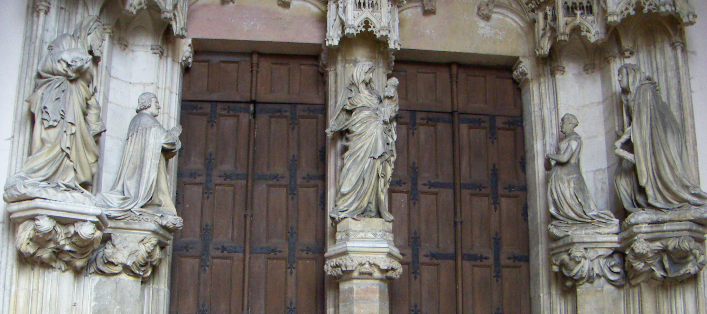

Architecture
A good example of Northern European architecture is Chartreuse de Champmol. The Chartreuse de Champmol is a monastery built in the 14th century meant to serve the Dukes of Burgundy. It incorporated Northern Realism and European gothic styles.Gothic architecture featured asymmetry, sharp curves, and grand, tall designs, which were meant to be imposing.
Most grand buildings in Northern Europe built during the Renaissance were gothic. In England especially, the idea of a pointed arch was used extensively In Fact, they created a “Tudor Arch”, which was very wide and ended at a sharp point .One building which implements the Tudor Arch is King’s college, which had many of its windows in this design.
Welleschik. CHARTREUSE_DE_CHAMPMOL. Aug. 2004. Wikimedia, https://commons.wikimedia.org/wiki/File:CHARTREUSE_DE_CHAMPMOL.JPG. Accessed 11 Mar. 2025, Richdat, Christan KingsCollegeChapel 13 Nov 2004.Wikimediahttps://commons.wikimedia.org/wiki/File:KingsCollegeChapel.jpg